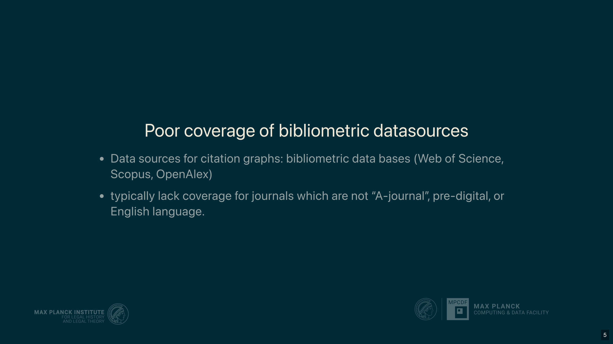
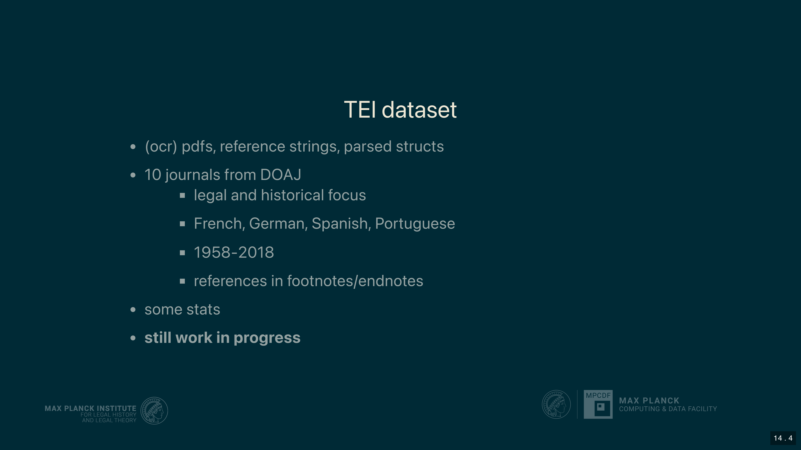

10 LLMs and Footnotes: Challenges in Humanities Scholarship
Overview
This chapter addresses the persistent challenges inherent in parsing footnotes from legal and humanities scholarship, particularly when generating citation graphs for intellectual history. The authors highlight the severe limitations of existing bibliometric databases, such as Web of Science, Scopus, and OpenAlex, which offer inadequate coverage for historical, non-English, and non-STEM literature. Moreover, these platforms struggle with the complex, commentary-rich footnotes prevalent in the humanities.
To overcome these obstacles, the project introduces a novel approach leveraging Large Language Models (LLMs) and Vision Language Models (VLMs). A core component of this initiative involves the meticulous compilation of a high-quality, TEI XML-encoded gold standard dataset. This dataset comprises 1,100 foot- and endnotes extracted from 25 articles across 10 Open Access (DOAJ) journals, focusing on legal and historical humanities. It encompasses French, German, Spanish, Italian, and Portuguese texts published between 1958 and 2018. This compilation yields over 1,600 distinct references, with each occurrence encoded separately to preserve contextual information.
A pivotal tool developed for this endeavour is Llamore, a lightweight Python package. Llamore facilitates the extraction of citation data from raw text or PDFs using LLMs and VLMs, subsequently exporting the results in TEI XML format. Furthermore, it provides a robust framework for evaluating extraction performance through F1-scores, meticulously comparing extracted references against the gold standard. The evaluation methodology employs precision and recall metrics for exact matches, incorporating an unbalanced assignment problem solver (from SciPy) to align extracted and gold references, thereby penalising both missing and hallucinated entries.
Initial findings demonstrate Llamore’s efficacy. When tested on the PLOS 1000 biomedical dataset, Llamore (utilising Gemini 2.0 Flash) achieved an F1-score of 0.62, closely matching Grobid’s performance of 0.61. Crucially, on the custom-curated humanities dataset, Llamore significantly outperformed Grobid, achieving an F1-score of 0.45 compared to Grobid’s 0.14. This underscores its superior capability in handling complex, footnoted literature. Future work aims to expand the training data, refine evaluation metrics, and enhance the system’s capacity for contextual citation analysis, including the resolution of op cit. and the identification of approving or contracting citations.
10.1 The Research Imperative: Unlocking Citation Graphs
The authors embark upon a critical investigation into the intricate nature of footnotes within law and humanities scholarship. They specifically address the inherent difficulties Large Language Models (LLMs) and other algorithms encounter when attempting to parse them. The overarching objective involves generating comprehensive citation graphs, which offer profound utility across various academic disciplines.
These graphs prove invaluable for scholars engaged in the history of science and intellectual history more broadly. They facilitate the discovery of intricate patterns and relationships within knowledge production, enabling a nuanced analysis of intellectual influences and a precise measurement of how ideas have been received and disseminated over time. A compelling application of this methodology involves identifying the most-cited authors across specific periods, exemplified by an analysis of the Journal of Law and Society between 1994 and 2003.
10.2 Problem One: Inadequate Bibliometric Data Coverage

A significant impediment to scholarly inquiry arises from the extremely poor coverage of historical Social Sciences and Humanities (SSH) literature within conventional bibliometric databases. Prominent platforms such as Web of Science, Scopus, and OpenAlex exhibit considerable deficiencies in this domain.
Web of Science and Scopus, in particular, impose substantial financial burdens and operate under highly restrictive licensing agreements, fundamentally hindering open research. Whilst OpenAlex offers a more accessible, open-access alternative, it nonetheless falls short of meeting the specific data requirements for this research. Critically, these databases collectively lack comprehensive coverage for journals not classified as “A-journals,” exhibit significant gaps concerning pre-digital publications, and frequently omit content published in languages other than English.
10.3 Empirical Evidence of Data Gaps
An illustrative example underscores the pervasive data gaps within existing bibliometric resources. The authors’ analysis of the Zeitschrift für Rechtssoziologie, a German journal dedicated to law and society established in 1980, reveals stark disparities in citation data availability. A comparative bar chart, contrasting data from Dimensions and OpenAlex across decades, clearly demonstrates that whilst coverage improves considerably after the 2000s, it remains almost non-existent for the journal’s earlier decades. This empirical observation highlights the critical need for alternative data acquisition strategies.
10.4 Problem Two: The Intricacies of Humanities Footnotes

The inadequate coverage within bibliometric databases stems from several fundamental issues. Primarily, humanities scholarship attracts less commercial interest compared to fields such as STEM, medicine, and economics, which typically dominate large bibliometric databases. Furthermore, these databases predominantly focus on “impact factor” for scientific evaluation, a metric largely irrelevant to research in intellectual history.
Crucially, the literature of interest in the humanities frequently employs highly complex footnotes, colloquially termed “footnotes from hell.” These often incorporate extensive commentary, present in a messy, unstructured format, and are embedded within considerable textual “noise” that is not part of the direct citation. Traditional information extraction instruments, whilst requiring laborious manual annotation processes, consistently demonstrate poor performance. For instance, machine learning tools relying on conditional random forests exhibit low extraction and segmentation accuracies, as evidenced by the ExCite Performance table, where even combined training data yields limited improvement.
10.5 Large Language Models: A Promising Yet Challenging Solution

Large Language Models (LLMs) emerge as a promising avenue for addressing the challenges of footnote parsing. Initial experiments conducted by the authors in 2022, utilising models such as text-davinci-003, unequivocally demonstrated their considerable power in extracting references from highly unstructured and complex textual data. Subsequent advancements in model architecture promise even more refined results, whilst the advent of Vision Language Models (VLMs) now enables direct processing of PDF documents.
The authors can employ various methods to leverage these models effectively, including sophisticated prompt engineering, Retrieval Augmented Generation (RAG), and fine-tuning. Nevertheless, an overriding concern persists regarding the trustworthiness of the results. LLMs, whilst powerful, can “hallucinate,” inventing non-existent citations. A lawyer who submitted federal court filings citing fabricated cases generated by ChatGPT starkly illustrates this phenomenon. Consequently, a fundamental principle guides this research: one must refrain from conducting any analysis unless robust validation data confirms the accuracy of the extracted information.
10.6 Establishing a Robust Evaluation Framework
Establishing a robust testing and evaluation solution constitutes a core requirement for advancing reliable information extraction. The authors determined that this solution necessitates three critical components:
A high-quality Gold Standard dataset must be meticulously compiled, serving as the definitive ground truth against which system performance can be measured.
Researchers require a flexible framework, one capable of readily adapting to the rapidly evolving technological landscape of Large Language Models and their associated methodologies.
The framework must incorporate solid testing and evaluation algorithms, ensuring the production of consistent and comparable metrics across different solutions and iterations.
10.7 Developing a TEI-Annotated Gold Standard

The authors have meticulously compiled a comprehensive dataset for both training and evaluation, employing TEI XML encoding. This choice of standard is deliberate, as TEI XML offers a well-established, precisely specified, and highly comprehensive framework for text interchange. Crucially, it surpasses more limited bibliographical standards, such as CSL or BibTeX, by encompassing a broader spectrum of textual phenomena.
Beyond mere reference management, TEI XML facilitates the encoding of citations, cross-references, and other contextual markup, enabling the classification of citation intention—a feature of significant interest to bibliometric projects. Furthermore, its widespread adoption in digital editorics projects allows for the integration of existing corpora, thereby enhancing the generalisation and robustness of the developed mechanisms. Despite its advantages, the TEI standard presents certain challenges, including conceptual distinctions between pointers and references, and technical considerations regarding constrained elements versus elliptic material.
The dataset’s establishment involves several stages: initially capturing PDF screenshots, then segmenting reference strings from the surrounding non-reference text within footnotes, and finally parsing these into a structured data format. Currently, the dataset comprises 1,100 foot- and endnotes, meticulously extracted from 25 articles published across 10 DOAJ journals. It specifically focuses on legal and historical humanities, incorporating multilingual content in French, German, Spanish, Italian, and Portuguese, spanning the period from 1958 to 2018. This compilation is expected to yield over 1,600 references, with each occurrence of a work encoded separately to preserve its specific context. The dataset remains a work in progress, with a strategic shift mid-way to include PDFs from Open Access journals, ensuring compatibility with Vision Language Models.
10.8 Leveraging TEI for Tooling and Comparison
A significant advantage of adopting the TEI XML standard lies in the extensive availability of compatible tooling. Among these, Grobid stands out as a particularly important resource for reference and information extraction. This widely used tool already employs TEI XML for its own training and evaluation processes.
Consequently, utilising the same data format offers multiple benefits. It directly enables a rigorous comparison of the developed tool’s performance against Grobid’s established benchmarks. Moreover, the authors can leverage Grobid’s existing training data to enhance their own mechanisms, whilst simultaneously contributing their newly compiled data to the Grobid team, fostering a collaborative environment for mutual advancement in the field.
10.9 Introducing Llamore: A Reference Extraction and Evaluation Package
The authors have developed Llamore, a concise Python package, to address the complexities of reference extraction. The name, an acronym for Large LANguage MOdels for Reference Extraction, precisely encapsulates its core functionality. This lightweight package, comprising fewer than 2000 lines of code, performs two essential tasks: it extracts citation data from either raw text or PDF documents using various Large Language Models, including multimodal variants, and subsequently evaluates the accuracy of these extractions.
Llamore operates on a clear input-output workflow: it processes textual or PDF inputs to generate references formatted in TEI XML, and it compares these extracted references against a set of gold standard references to compute an F1-score, serving as the primary evaluation metric. During its development, two key objectives guided its design: maintaining a lightweight architecture by functioning as an interface to external models rather than embedding them, and ensuring broad compatibility with both proprietary and open-source LLMs and Vision Language Models.
10.10 Llamore: Implementation and Workflow
Llamore offers a straightforward implementation and workflow, readily accessible via PyPI for installation using pip. For the extraction process, users import specific extractor classes, such as GeminiExtractor or OpenaiExtractor, and then instantiate an extractor, typically providing an API key. The system processes either a PDF file path or a raw input string, subsequently returning the extracted references. These references can then be conveniently exported to a TEI biblStructs XML file. Notably, the OpenaiExtractor ensures broad compatibility, as most open model serving frameworks, including Olama and VLLM, provide an API endpoint compatible with OpenAI’s standard.
The evaluation process involves importing the F1 class, which can be instantiated with an optional levenshtein_distance parameter, defaulting to zero for an exact match. Subsequently, the authors compute the macro-average F1-score by supplying both the extracted and the gold standard references to the compute_macro_average method.
10.11 Evaluation Metrics: F1-Score for Reference Comparison

The F1-score serves as the primary evaluation metric, a well-established standard for comparing structured data. This composite measure integrates both Precision and Recall. Precision quantifies the proportion of correctly identified elements among all predicted elements, whilst Recall measures the proportion of correctly identified elements among all actual gold standard elements. By default, Llamore employs an exact match criterion, though this can be configured to allow for a specified Levenshtein distance, accommodating minor discrepancies.
Consider an example: an extracted reference might contain an analytic title, a monographic title, author details (forename and surname), and a publication date. A corresponding gold reference might include these fields plus a cited range. If the analytic title, monographic title, surname, and publication date align perfectly, these constitute four matches. However, a slight deviation, such as an extra dot in the forename within the gold reference, would render that specific field a mismatch. The F1-score is then calculated as the harmonic mean of these precision and recall values. An F1-score of one signifies perfect extraction, indicating that the reference has been flawlessly identified, whereas a score of zero denotes a complete absence of matches.
10.12 Reference Alignment: The Unbalanced Assignment Problem
Beyond merely comparing individual references, a significant challenge involves accurately aligning the set of extracted references with their corresponding gold standard counterparts. The authors address this by formulating the problem as an “Unbalanced Assignment Problem,” a well-documented class of optimisation challenges. Llamore employs an internal solver from the SciPy library to resolve this.
The process entails computing F1-scores for every conceivable combination of extracted and gold references, subsequently constructing a comprehensive matrix from these scores. The solver then works to maximise the total F1-score across the entire set, whilst rigorously ensuring a unique assignment for each reference. Finally, the system macro-averages the F1-scores of these uniquely assigned pairs. Crucially, the methodology incorporates a stringent penalisation mechanism: both missing references and any hallucinated entries are assigned an F1-score of zero, thereby accurately reflecting their impact on overall performance.
10.13 Performance Evaluation: Llamore vs. Grobid

The authors rigorously compared Llamore against Grobid across two distinct datasets. On the PLOS 1000 Dataset, comprising 1,000 biomedical PDFs, Llamore, utilising Gemini 2.0 Flash, achieved an F1-score of 0.62 for exact matches, closely mirroring Grobid’s score of 0.61. Whilst their accuracy proved comparable on this dataset, Grobid demonstrated superior efficiency and reduced resource intensity, largely attributable to its prior training on similar journal articles.
However, a stark contrast emerged when testing on the custom-curated humanities dataset, which features complex footnoted literature. Here, Grobid struggled considerably, yielding an F1-score of merely 0.14. In stark contrast, Llamore’s approach achieved a significantly higher F1-score of 0.45, unequivocally demonstrating its superior capability in extracting references from this challenging domain.
10.14 Conclusion and Takeaways

In conclusion, Grobid retains its advantage as the preferred tool for literature types upon which it was specifically trained, primarily owing to its superior processing speed and significantly lower resource demands. Nevertheless, for the particularly challenging domain of footnoted literature, experiments employing Llamore in conjunction with Gemini models reveal a compelling three-fold improvement in extraction performance. It is important to note that the current performance metrics pertain exclusively to pure reference extraction, deliberately excluding considerations of contextual information or complex cross-referencing.